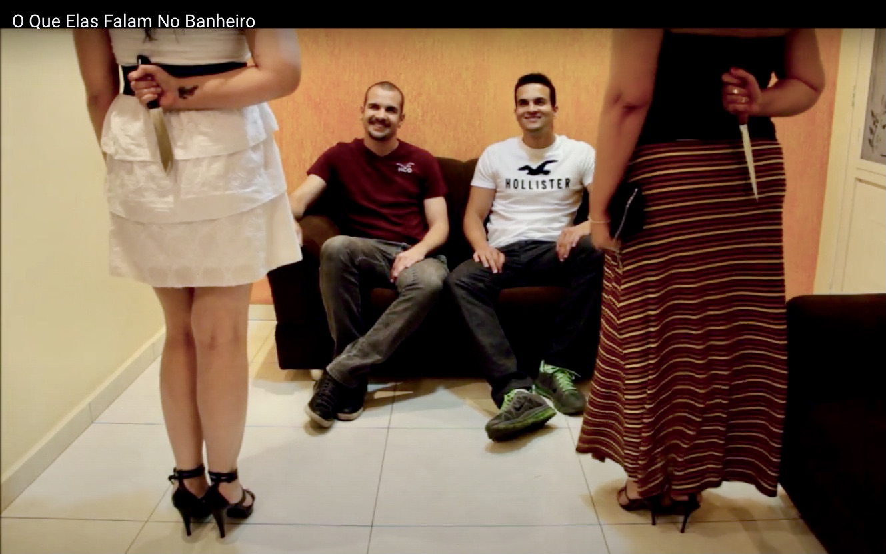
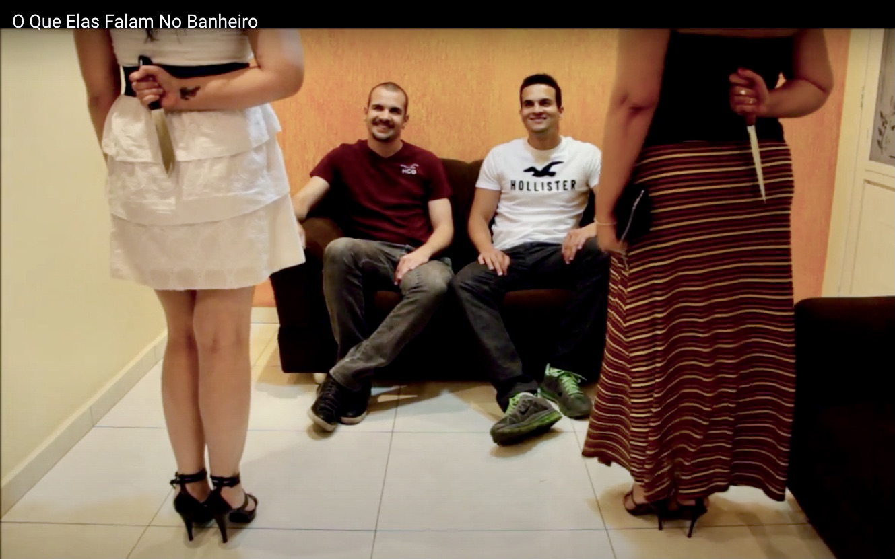

Iris AraújoMein Name ist Iris Pereira Araújo, ich komme aus Brasilien. Ich bin gelernte Bekleidungstechnikerin und ich habe Berufserfahrung im industriellen Bereich der Bekleidungsherstellung sowie mit Qualitätsprozessen in Brasilien. |
Meine Lernfelder im Studiengang Bekleidungstechnik an der SENAI im Berufsfeld Industrieproduktion hatten die grundlegenden Inhalte:
| 07.2020 - 09.2020 | Freiwilligendienst in der Ev. Kindergarten Petrusheim, Berlin, Deutschland. |
| 11.2016 - 05.2017 | Steuerberaterassistentin an der Figueiredo Associados in Belo Horizonte, Brasilien. |
| 05.2013 - 11.2015 | Qualitätsmanagement, Textilfabrik Handam Uniformes in Belo Horizonte, Brasilien. |
| 06.2011- 01.2013 | Änderungsschneiderei bei K9 Fashion in Belo Horizonte, Brasilien. |
| 06.2006 - 07.2007 | Rezeptionistin bei Itabira Films in Itabira, Brasilien. |
| 03.2005 - 11.2005 | Technischer Support bei Itabira, Minas Gerais, Brasilien. |
Die künstlerische Arbeit als Kostümbildnerin für drei Kurzfilme war eine sehr schöne Erfahrung. Die Kostüme für die weiblichen Figuren habe ich mit meinen eigenen Händen hergestellt und realisiert.
 

| Portugiesisch | ⭐️⭐️⭐️⭐️⭐️ |
| Deutsch | ⭐️⭐️⭐️ |
| Englisch | ⭐️⭐️⭐️ |
| Spanisch | ⭐️⭐️⭐️ |